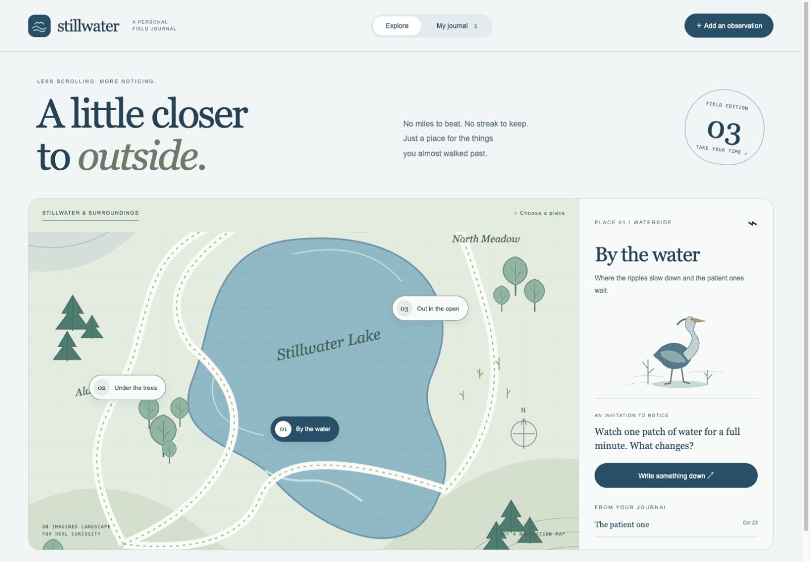
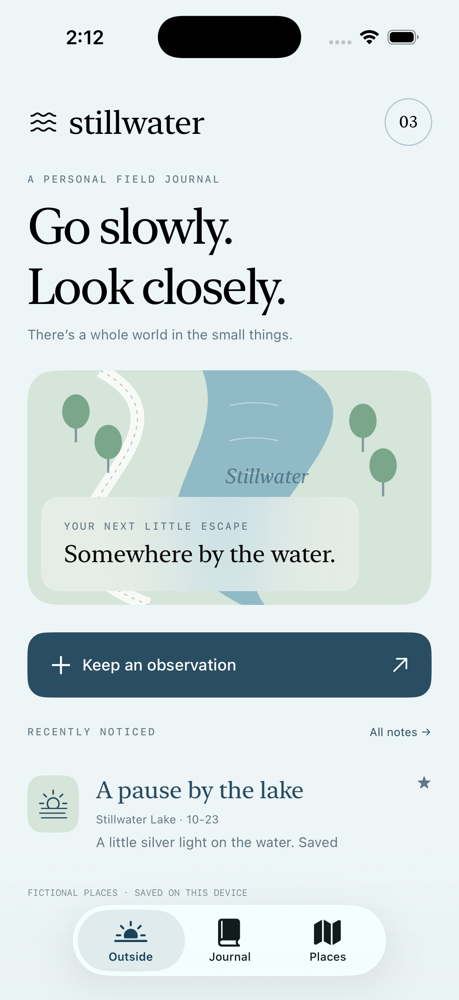
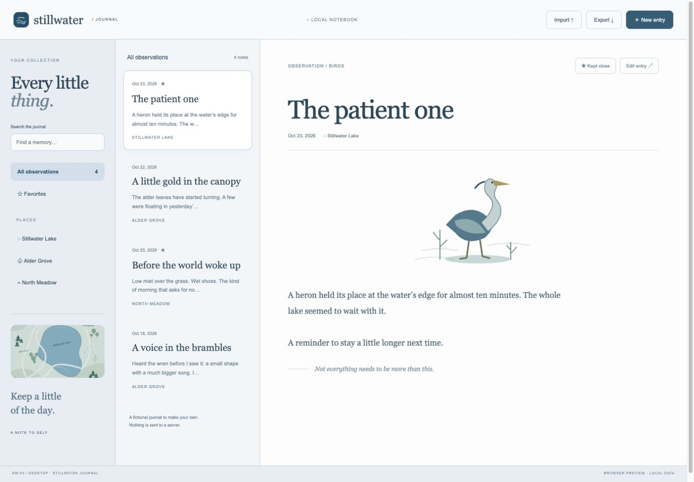

The outside atlas
Choose a place on the illustrated map, follow a prompt and keep what you notice. Search, favorite and export your observations.
SAMPLE SET 03 / SW-03 / QUIET ATLAS

For the things you
almost walked past.
A personal nature journal, expressed as an illustrated landscape, a pocket companion and a quiet writing workspace. Cool blue, sage and lavender. No business to run. Just a little more room for noticing.
Explore the landscape ↗
Choose a place on the illustrated map, follow a prompt and keep what you notice. Search, favorite and export your observations.

A native iPhone journal for small observations, favorite memories and places you return to. Includes portable journal import/export.

A writing workspace with a place index, observation list, roomy reading pane, editing and local backups.
PICK THE WORKFLOW. BORROW THE STYLE.
“I want SW-03 / Mobile journaling with the bold colors and typography from SA-02 / Web.” Functionality and visual direction are independent choices in your brief.
Try that combination ↗All places and initial observations are fictional. Each app stores its own local data. Compatible JSON exports let you move a journal manually between them; there is no automatic sync or account. Imports replace the destination journal after confirmation. Keep exports for anything you want to retain. Files are readable, not encrypted.
The illustrated map is not for navigation. No location, weather or species identification service is connected. The iPhone screenshot is from the native Simulator. Native desktop verification covers Apple silicon macOS. Sources are available, with no store listing or signed installer.
Public source · MIT license ↗Click any screen to try it. Mobile demos adapt the native app’s key flows for the browser; device features are not included. Mobile edits reset when reloaded.